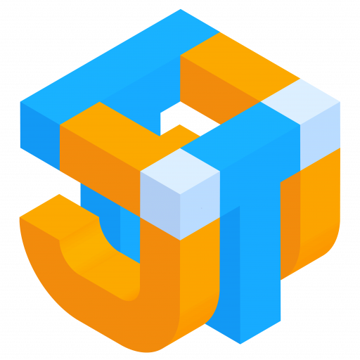

JTUSBKVM v1.4
序列終端機
控制
🟢 連接
🔴 中斷
Ctrl+Alt+Del
F1-F12
Win
Ctrl
Alt
🔄 釋放
📋 貼上
視訊
3:2
4:3
5:3
5:4
16:9
16:10
21:9
▶️ 連接
⏹️ 中斷
🔍＋
🔍－
🖼️ 擷圖
🔴 錄影
⬛ 停止
00:00:00
F1
F2
F3
F4
F5
F6
F7
F8
F9
F10
F11
F12
文字傳送工具
此工具會模擬鍵盤在目標電腦上逐字輸入文字。
支援內容：
英文字母（大小寫）
數字
標點符號
空格和換行
注意：不支援中文、日文、韓文等非英文字元
請貼上要傳送的文字：
進度：
0
/
0
(
0
%)
開始傳送
暫停
取消
尚未連接視訊來源
🖥️
序列終端機
─
×
速率
9600
19200
38400
57600
115200
換行
CRLF (\r\n)
CR (\r)
LF (\n)
🔌 連接控制器
🧹 清除畫面
⬇️ 下載記錄